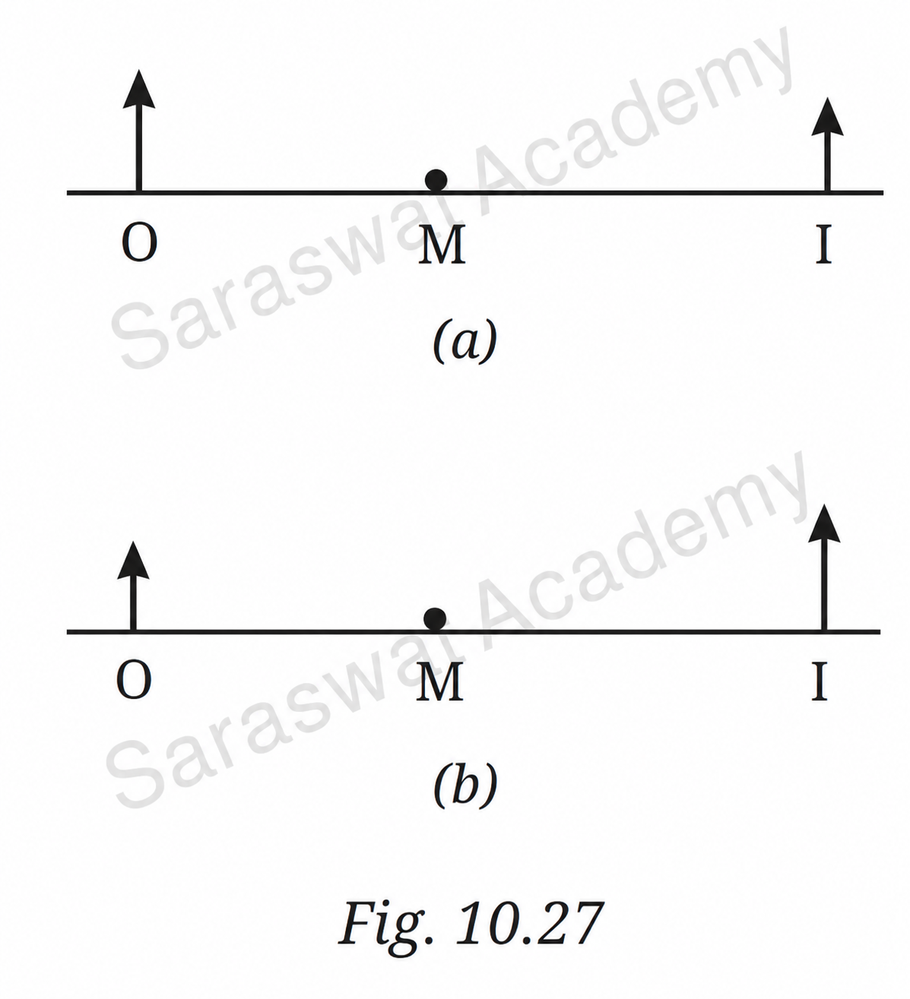

SCIENCE CLASS- 8
CHAPTER-10 (Light: Mirrors and Lenses)
Question 1. A light ray is incident on a mirror and gets reflected by it (Fig. 10.21). The angle made by the incident ray with the normal to the mirror is 40°. What is the angle made by the reflected ray with the mirror?

Given:
Angle of incidence (i) = 40°
According to the law of reflection:
Angle of reflection (r) = Angle of incidence
Therefore,
r = 40°
The reflected ray makes an angle of 40° with the normal.
Since the normal is perpendicular to the mirror:
Angle made by reflected ray with mirror
= 90° − 40°
= 50°
Answer: (ii) 50°
Question 2. Fig. 10.22 shows three different situations where a light ray falls on a mirror.
(i) The light ray falls along the normal.

Answer:
When the incident ray falls along the normal:
Angle of incidence = 0°
Angle of reflection = 0°
The reflected ray retraces the same path.
(ii) The mirror is tilted, but the light ray still falls along the normal.
Answer:
Angle of incidence = 0°
Angle of reflection = 0°
The reflected ray returns along the same path.
(iii) The mirror is tilted, and the light ray falls at an angle of 20° from the normal.
Answer:
Angle of incidence = 20°
Angle of reflection = 20°
The reflected ray will be drawn making 20° with the normal on the opposite side.
Question 3. In Fig. 10.23, the cap of a sketch pen is placed in front of three types of mirrors. Match each image with the correct mirror.
Observation:
- Image (i) is smaller than the object.
- Image (ii) is enlarged.
- Image (iii) is of nearly the same size.
Answer:
| Image | Mirror |
|---|---|
| (i) | Convex mirror |
| (ii) | Concave mirror |
| (iii) | Plane mirror |
Question 4. In Fig. 10.24, the cap of a sketch pen is placed behind a convex lens, a concave lens, and a flat transparent glass piece.
Answer:
| Image | Lens/Glass Type |
|---|---|
| (i) | Convex lens |
| (ii) | Concave lens |
| (iii) | Flat transparent glass piece |
Explanation:
- A convex lens can magnify an object.
- A concave lens always forms a diminished image.
- A glass slab forms an image nearly equal in size to the object.
Question 5. When the light is incident along the normal on the mirror, which statement is true?
Answer: (ii) Angle of incidence is 0°
Explanation:
The angle of incidence is measured between the incident ray and the normal.
If the ray travels exactly along the normal, the angle is 0°.
Question 6. Three mirrors—plane, concave, and convex—are placed in Fig. 10.25. On the basis of the images of the graph sheet formed in the mirrors, identify the mirrors.
Answer:
- Left mirror → Convex mirror
- Middle mirror → Plane mirror
- Right mirror → Concave mirror
Explanation:
- A convex mirror produces a smaller image.
- A plane mirror produces an image of the same size.
- A concave mirror may produce an enlarged image when the object is close.
Question 7. In a museum, a woman walks towards a large concave mirror (Fig. 10.26). She will see that:
Answer: (iii) Her inverted image keeps increasing in size and eventually becomes erect and magnified.
Explanation:
When the woman is far from the concave mirror, the image formed is real and inverted.
As she comes closer, the image becomes larger.
When she comes within the focal length, the image becomes erect, virtual and magnified.
Question 8. Hold a magnifying glass over text and identify the distance where you can see the text bigger than written. Now move it away from the text. What do you notice? Which type of lens is a magnifying glass?
Answer:
When the magnifying glass is held close to the text, the letters appear enlarged.
As it is moved farther away, the magnified image gradually decreases and may become inverted at larger distances.
A magnifying glass is a convex lens.
Reason:
A convex lens converges light rays and can produce a magnified virtual image when the object is within its focal length.
Question 9. Match the entries in Column I with those in Column II.
| Column I | Column II |
|---|---|
| (i) Concave mirror | (a) Spherical mirror with a reflecting surface that curves inwards |
| (ii) Convex mirror | (b) It forms an image which is always erect and diminished in size |
| (iii) Convex lens | (c) Object placed behind it may appear inverted at some distance |
| (iv) Concave lens | (d) Object placed behind it always appears diminished in size |
Answer:
- (i) → (a)
- (ii) → (b)
- (iii) → (c)
- (iv) → (d)
Question 10. Assertion–Reason
Assertion: Convex mirrors are preferred for observing the traffic behind us.
Reason: Convex mirrors provide a significantly larger view area than plane mirrors.
Answer: (i) Both Assertion and Reason are correct and Reason is the correct explanation for Assertion.
Explanation:
Convex mirrors form erect and diminished images and provide a wider field of view.
Therefore, drivers can see a larger area behind them, making convex mirrors suitable as rear-view mirrors.
Question 11. In Fig. 10.27, O stands for object, M for mirror and I for image. Which of the following statements is true?
Figure (a):
The image is formed behind the mirror at the same distance as the object.
This is a characteristic property of a plane mirror.
Figure (b):
The image is closer to the mirror and diminished.
This is a characteristic property of a convex mirror.

Answer: (iv) Figure (a) indicates a plane mirror and Figure (b) indicates a convex mirror.
Important Laws and Concepts
- Angle of incidence = Angle of reflection.
- The incident ray, reflected ray and normal lie in the same plane.
- Plane mirrors form virtual, erect images of the same size.
- Convex mirrors always form virtual, erect and diminished images.
- Concave mirrors can form real or virtual images depending on object position.
- Convex lenses can produce magnified images and are used in magnifying glasses.
- Concave lenses always form virtual, erect and diminished images.
- Convex mirrors are used as rear-view mirrors because they provide a wider field of view.